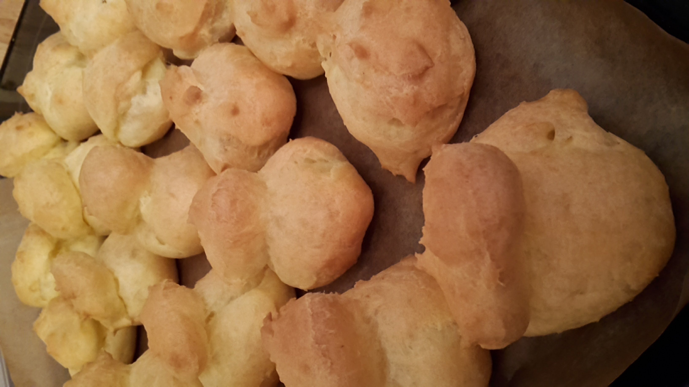

Заварной крем

Желтки - 3 шт Молоко - 300 мл Мука - 30 г Сахар - 30 г Сахарная пудра - 30 г Ванилин
Молоко с сахаром подогреть в кастрюле до растворения сахара, туда же ванилин.
Желтки, сахарную пудру и муку размешать в отдельной посуде.
Растереть, чтобы не было комочков.
Соединить обе смеси в кастрюле и варить на медленном огне, постоянно помешивая, пока не загустеет.